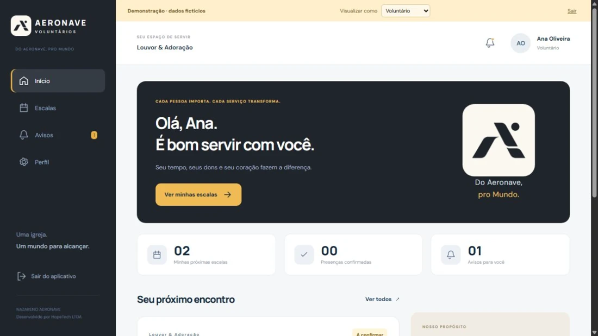

Acompanha encontros e avisos, confirma presença e informa ausências.
PORTFÓLIO / PROJETOS
Ideias que viram
software.
Aplicações, experiências e soluções que conectam desenvolvimento e problemas do mundo real.
01 / APLICATIVO EM DESTAQUE
Meu Financeiro
Um aplicativo familiar de controle financeiro, desenvolvido para reunir receitas, despesas, orçamento e metas em uma mesma experiência.
O registro de lançamentos pode ser feito manualmente, por voz ou por texto natural. A inteligência artificial interpreta e classifica o lançamento, com confirmação antes de gravar.
Experiência isolada, sem cadastro e com dados fictícios. Você começa como um novo visitante; os testes são apagados ao recarregar a página.
VISÃO MENSAL · EXEMPLO ILUSTRATIVO
ReceitasR$ 7.000
DespesasR$ 3.240
Representação ilustrativa. Os valores são fictícios.
Do lançamento ao planejamento
- Receitas e despesas manuais, por texto ou por voz.
- Classificação automática e confirmação dos lançamentos.
- Painel mensal e ranking de gastos por categoria.
- Orçamento por categoria e plano-base 50/30/20.
- Faixas de gastos: mínimo, ideal e máximo.
- Metas financeiras e assistente com histórico de seis meses.
Desenvolvimento em camadas
Interface em Flutter, API em ASP.NET Core e persistência em PostgreSQL. O acesso usa autenticação JWT e os dados são compartilhados por família.
O projeto prevê dois administradores na configuração inicial. A interpretação com IA possui uma alternativa local quando a integração não está configurada.
Código-fonte privado. A integração bancária Open Finance não está ativa na versão documentada. Recursos e disponibilidade podem variar durante a beta.
Veja como a proposta funciona
Vídeo explicativo ilustrativo, com exemplos fictícios e texto na tela. Apresenta o fluxo descrito na documentação do projeto; não é uma gravação de uma conta real.
Ler a descrição do vídeo +
1. Abra a demonstração e comece como um novo visitante. 2. Registre uma despesa, por exemplo: “Gastei 150 reais de gasolina hoje”. 3. Revise a interpretação e confirme o lançamento. 4. Acompanhe o painel mensal e os gastos por categoria. 5. Defina orçamentos e metas para a família.
02 / GESTÃO DE VOLUNTÁRIOS
VolunteerManager
Aeronave • Voluntários
Aplicativo para organizar o trabalho voluntário da Nazareno Aeronave, conectando pessoas, ministérios, funções e escalas de serviço.
A experiência reúne três perfis: voluntário, líder e administrador. Cada um tem sua própria visão e permissões, do acompanhamento das escalas à gestão dos ministérios.
Conheça o aplicativo pelas telas do modo de demonstração, sem entrar em uma conta real.

Tela real da demonstração. Nomes e informações apresentados são fictícios.
Do cadastro à escala de serviço
- Cadastro por e-mail e senha, com liberação administrativa.
- Gestão de perfis, ministérios, funções e contas ativas.
- Publicação e cancelamento de escalas pela liderança do ministério.
- Check-in por deslize na própria escala, dentro do período permitido.
- Ausência com justificativa e sugestão de substituto da mesma função.
- Confirmação da substituição pela liderança.
- Avisos internos e estrutura de lembretes e notificações Web Push.
Uma experiência para cada perfil
Organiza escalas, acompanha a equipe e avalia substituições no próprio ministério.
Gerencia pessoas, permissões, ministérios, funções e liberação de novos cadastros.
Aplicação React instalável como PWA, com autenticação e regras de acesso no banco de dados. O código-fonte permanece privado. A entrega de notificações depende das permissões e do suporte do aparelho.
Uma iniciativa da Nazareno Aeronave, desenvolvida por HopeTech LTDA.
Veja o VolunteerManager em funcionamento
Vídeo guiado com telas reais do modo de demonstração. Todas as pessoas e informações exibidas são fictícias. Nenhuma conta real foi acessada ou alterada.
Ler a descrição da demonstração +
O vídeo apresenta o painel do voluntário, a consulta de escalas e a justificativa de ausência com sugestão de substituição. Depois, mostra a visão da liderança, o formulário de uma nova escala e a gestão de pessoas e ministérios no perfil de administrador.
03 / NO GITHUB
Outros repositórios
apps
Repositório descrito no GitHub como “Aplicativos”.
Explorar no GitHub ↗gestao-ativos
Repositório público de Heitor Tobias. Ainda sem arquivos ou descrição publicados na consulta realizada.
Explorar no GitHub ↗Seleção atualizada em 29/10/2026. Para conhecer novos projetos, visite o perfil no GitHub.